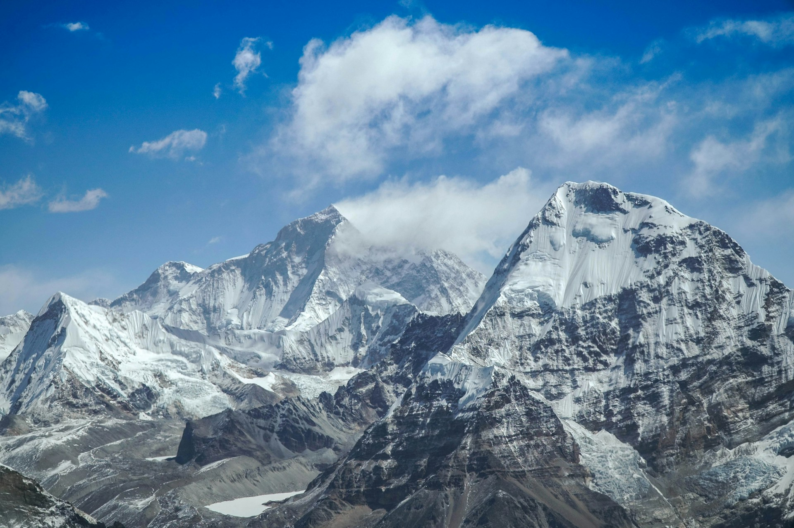
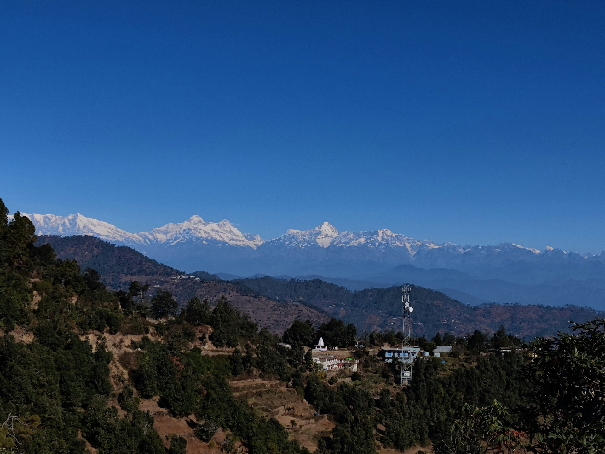
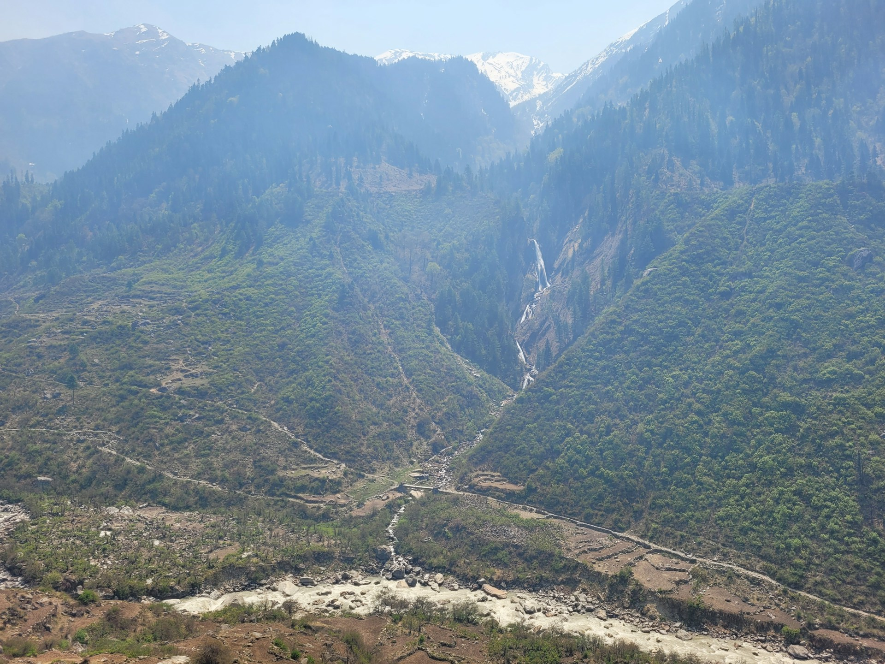
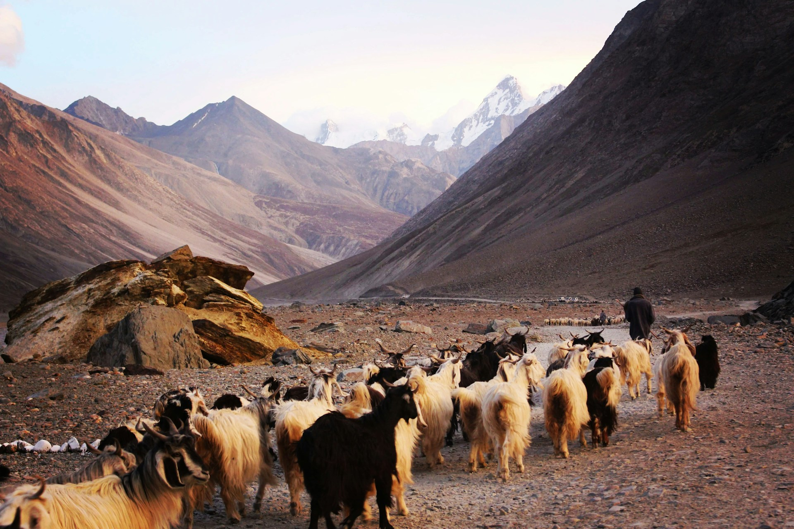

The Himalayas, also known as the 'Roof of the World', are the highest mountain range in the world.
Stretching across five countries — India, Nepal, Bhutan, China, and Pakistan — the Himalayas feature towering peaks
such as Mount Everest, K2, and Kanchenjunga.
The range is renowned for its natural beauty, rich biodiversity, and spiritual significance. It's home to diverse flora and fauna, including snow leopards, Himalayan tahr, and various species of birds.
The Himalayas are also a pilgrimage site for many Hindus, Buddhists, and Sikhs, with famous religious sites such as Amarnath, Kedarnath, and the Golden Temple in the region.
The Himalayas offer ample opportunities for adventure tourism, including trekking, mountaineering, and skiing. It is a sanctuary for nature lovers and thrill-seekers alike.
The range is renowned for its natural beauty, rich biodiversity, and spiritual significance. It's home to diverse flora and fauna, including snow leopards, Himalayan tahr, and various species of birds.
The Himalayas are also a pilgrimage site for many Hindus, Buddhists, and Sikhs, with famous religious sites such as Amarnath, Kedarnath, and the Golden Temple in the region.
The Himalayas offer ample opportunities for adventure tourism, including trekking, mountaineering, and skiing. It is a sanctuary for nature lovers and thrill-seekers alike.





Tips for Visit
- Best season: March to June and September to November for trekking.
- Carry proper gear for high-altitude activities and be prepared for cold weather.
- Visit early mornings to avoid crowds at popular pilgrimage sites.
- Book treks and tours through authorized guides to ensure safety.
- Respect local cultures and traditions at religious sites.

Ramesh Kumar
15 yrs guiding in Agra
⭐⭐⭐⭐⭐
Farida Begum
Mughal history specialist
⭐⭐⭐⭐☆
Imran Ali
Speaks English, Hindi, French
⭐⭐⭐⭐⭐
Priya Sharma
Cultural & heritage tours
⭐⭐⭐⭐
Local Services
| NAME | CONTACT |
|---|---|
| Tourist Helpdesk | +91-123-4567890 |
| Local Taxi | +91-9876543210 |
| Hotel Info | +91-123-7896540 |
| Emergency | 100 / 108 |
Nearby Places
| NAME | Location | Highlights |
|---|---|---|
| Manali | 300 km | Adventure sports |
| Kullu | 350 km | Scenic landscapes |
| Leh | 400 km | High-altitude desert |
| Shimla | 200 km | Colonial architecture |